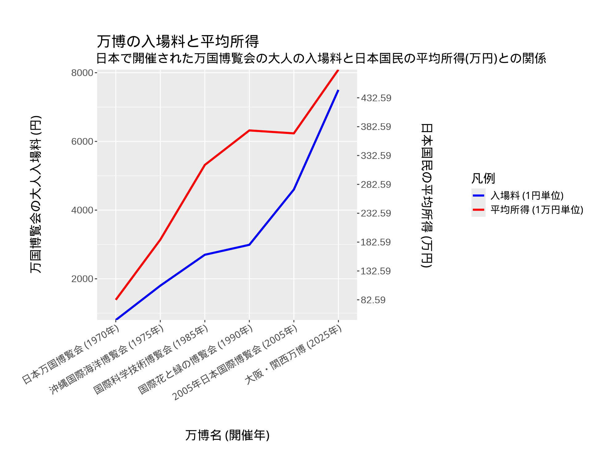

(B) 視覚的表現の解説
(B1) 日本で開催された万国博覧会の入場料と日本国民の所得との関係
(B2) 視覚的表現
視覚的表現のソースコード
library(ggplot2)
suppressMessages({
library(showtext)
# フォントの読み込み
showtext::showtext_auto()
})
# データを読み込む
expo_data <- read.csv("./data/data.csv")
# 西暦順にラベルを並べる
label <- paste0(
expo_data$name[order(expo_data$western_year)],
" (",
expo_data$western_year[order(expo_data$western_year)],
"年)"
)
expo_data$label <- factor(
label,
levels = label,
ordered = TRUE
)
# 平均年収のスケールを調整する
expo_data$give_mean_10k <- expo_data$give_mean / 10000
# 平均年収と入場料のスケールを合わせる
entrance_fee_min <- min(expo_data$entrance_fee)
entrance_fee_max <- max(expo_data$entrance_fee)
give_mean_min <- min(expo_data$give_mean_10k)
give_mean_max <- max(expo_data$give_mean_10k)
scaler <- (entrance_fee_max - entrance_fee_min) /
(give_mean_max - give_mean_min)
# グラフの作成
ggplot(data = expo_data, aes(x = label)) +
geom_line(
aes(y = entrance_fee, group = 1, colour = "入場料 (1円単位)"),
linewidth = 1.2
) +
geom_line(
aes(
y = give_mean_10k * scaler,
group = 1,
colour = "平均所得 (1万円単位)"
),
linewidth = 1.2
) +
scale_y_continuous(
expand = c(0, 0),
sec.axis = sec_axis(
transform = ~ .x / scaler,
breaks = seq(from = give_mean_min, to = give_mean_max, by = 50),
name = "\n日本国民の平均所得 (万円)\n"
)
) +
scale_x_discrete(expand = c(0.07, 0.07)) +
scale_color_manual(
name = "凡例",
values = c("入場料 (1円単位)" = "blue", "平均所得 (1万円単位)" = "red")
) +
labs(
x = "\n万博名 (開催年)\n",
y = "\n万国博覧会の大人入場料 (円) \n",
title = "\n万博の入場料と平均所得",
subtitle = "日本で開催された万国博覧会の大人の入場料と日本国民の平均所得(万円)との関係"
) +
theme(
# 基本フォントサイズ
text = element_text(size = 30),
# X軸ラベルの回転
axis.text.x = element_text(angle = 30, hjust = 1)
)(B3) 対象データ
各項目について
- name
- データの種類: N
- 意味: 各万国博覧会の正式名称
- western_year
- データの種類: T (データの構造では、\(T_1\)と表現することとする)
- 意味: 各万国博覧会の開催開始年 (西暦)
- era_year
- データの種類: T (データの構造では、\(T_2\)と表現することとする)
- 意味: 各万国博覧会の開催開始年 (和暦)
- entrance_fee
- データの種類: Q (データの構造では、\(Q_1\)と表現することとする)
- 意味: 各万国博覧会の大人の入場料
- give_mean
- データの種類: Q (データの構造では、\(Q_2\)と表現することとする)
- 意味: 各年の平均給与
データの構造について
\[ N \times T_1 \times T_2 \rightarrow Q_1 \times Q_2 \]
1変量質的 (名義) データと2変量時刻データの組をキーとする量的データの組
(B4) データの加工方法
可視化を行うにあたり行なったデータの加工方法（他の人が再現できるような詳細度で説明すること。）
name, western_year, entrance_feeは、 大阪・関西万博のサイト その1 (大阪・関西万博の正式名称の調査に使用)と 大阪・関西万博のサイト その2 (大阪・関西万博の大人入場料金の調査に使用)と OTOPICK (前述の情報以外の情報の調査に使用)より、 取得したデータを利用している。沖縄国際海洋博覧会の大人入場料金の調査に使用したサイトは、販売サイトであったため、リンクを貼っておりません。 Googleで「沖縄国際海洋博覧会 入場券」と検索すると、沖縄国際海洋博覧会の大人入場料金がわかるはずです。 なお、各万国博覧会の大人の入場料に関しては、日中の大人の料金であり、前売券と当日券の両方の金額が確認できた国際科学技術博覧会の入場料は当日券を、 平日券と一日券の両方の金額が確認できた大阪・関西万博の入場料は一日券を採用した。
give_meanの令和7年以外については、民間給与実態統計調査結果 (国税庁)の 統計表の「2－1 給与所得者数・給与額・税額」を利用している。
give_meanの令和7年のデータについては、マイナビの 1月の全国平均初年度年収を利用している。
尚、give_meanとentrance_feeの金額の単位は、1円を1として集計している。
データの形式は、csv形式のデータである。 具体的なデータは、以下を参照のこと。
データの過加工に関しては、R言語で出力した可視化表現をQuartoでサイトの一部として表示している。
具体的なプログラムについては、それぞれの可視化表現をしている箇所にソースコードも表示しているので、そちらを参照のこと。
環境の再現
以下の手順で環境の再現を行なうことができる。
- 当レポジトリをclone
git clone https://github.com/Myxogastria0808/information_visualization_homework1- devShellを利用した環境に入る
当レポジトリのルートのディレクトリで、以下のコマンドを実行する。
以下のコマンドを実行するためには、Nixと Nix flakesが必要です。 Nixと Nix flakesについては、LinuxユーザとMacOSユーザで利用できるはずです。
nix develop- Quarto Websitesのプレビューを見る
以下のコマンドを実行すると、ブラウザにビルド結果が表示されるはずである。
quarto preview src環境の再現性について
Nixを採用したことにより、再現性の高い開発環境を構築することができた。
情報可視化において、可視化表現の結果が常に再現可能である状態を維持することは 非常に重要なことだろう。 今後、情報可視化の分野においてもNixの利用が広まることを期待している。
flake.nix
以下のflake.nixが、このレポジトリの開発環境を構築するためのNix言語の記述になる。
{
description = "information_visualization_homework1";
inputs = {
nixpkgs.url = "github:NixOS/nixpkgs/nixos-25.05";
flake-utils.url = "github:numtide/flake-utils";
};
outputs =
inputs:
inputs.flake-utils.lib.eachDefaultSystem (
system:
let
pkgs = inputs.nixpkgs.legacyPackages.${system};
rpkgs = with inputs.nixpkgs.legacyPackages.${system}.rPackages; [
DT
ggplot2
tidyverse
showtext
];
in
{
devShells.default = pkgs.mkShell {
packages =
with pkgs;
[
R
quarto
noto-fonts-cjk-serif
]
++ rpkgs;
};
}
);
}
(B5) 可視化に利用したツール
- プログラム言語
- R言語
- コードフォーマッタ
- 使用したR言語のpackage
- DT
- ggplot2
- showtext
- 環境の再現
- Nix (Nix flakes)
- レポートのサイトの生成
- GitHub Pagesヘのデプロイ
- GitHub Actions \(\times\) Nix
ソースコード等は、以下のレポジトリに公開しています。
https://github.com/Myxogastria0808/information_visualization_homework1
(B6) 表現規則
表現規則（基本図形／視覚変数／配置規則を区別すること。基本規則／作図規則を区別すること。「◯◯◯に準じる」という表現は使わずに、すべて具体的に記述すること。）
- 対象データ
- 各万国博覧会の正式名称 \(N \times\) 各万国博覧会の開催開始年 (西暦) \(T_1 \times\) 各万国博覧会の開催開始年 (和暦) \(T_2 \rightarrow\) 各万国博覧会の大人の入場料 \(Q_1 \times\) 各年の平均給与 \(Q_2\)
- 基本規則
- 基本図形
- 項目 \(\Rightarrow\) 点
- 項目を 各万国博覧会の開催開始年 (西暦) \(T_1\) の順に線でつなぐ
- 視覚変数
- 各万国博覧会の大人の入場料 \(Q_1\) と 各年の平均給与 \(Q_2\) の区別 \(\Rightarrow\) 線の色
- 配置規則
- 各万国博覧会の正式名称 \(N \times\) 各万国博覧会の開催開始年 (西暦) \(T_1\) \(\Rightarrow\) 点の横方向の位置
- 各万国博覧会の大人の入場料 \(Q_1 \Rightarrow\) 点の縦方向の位置 (目盛りは、左側に従う)
- 各年の平均給与 \(Q_2 \Rightarrow\) 点の縦方向の位置 (目盛りは、右側に従う)
- 基本図形
- 作図規則
- 直交座標系
- \(x\) 軸に時刻データの軸を \(y\) 軸には互いのスケールを鑑みてスケールを調整した各年の各万国博覧会の大人の入場料と平均給与の軸を \(y_1\) 軸と \(y_2\) 軸として設定する
(B4) 生成AIの使用に関する情報
- (B4-1)
- AIサービス
- ChatGPT
- URL
- AIサービス
- ChatGPTを使用して、検証する題目が妥当かどうかの確認を行った。
- (B4-2) プロンプト
- 過去、日本で開催された万博の入場料を比較することで、日本国民の所得の変化との関係を示すことはできますか？
- 沖縄国際海洋博覧会が開催さいれていた当時の入場料金を教えてください。また、出典も明記してください。
- 各年の日本国民の平均所得を公開しているサイトを教えてください
- 調査対象のデータが時刻データとして扱って良いかどうかの確認 (プロンプトを要約して書いています)
- 所得のデータについて、追加の質問 (プロンプトを要約して書いています)
- 適切な可視化表現についての質問 (プロンプトを要約して書いています)
- (B4-3) AIの出力
- (B4-2) プロンプト
(B5) AIを利用した可視化結果に対する批評
非常に限られた情報しかインターネット上に存在しない質問に関しては、 正しい回答を得ることはできなかった。しかし、比較的充実した情報が インターネット上にあると考えられる質問に関しては、割と妥当な回答を 得ることができた。